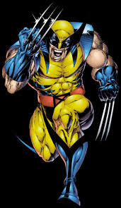

A história do Wolverine
A origem do Wolverine
O experimento do governo que deu a ele os ossos e garras de adamantium.

Poderes e Habilidades
- Regeneração acelerada (cura).
- Garras de adamantium e habilidades de combate.
- Sentidos aguçados e força sobre-humana.
- Durabilidade e resistência.